Awami Nastaliq - What is Special About Awami Nastaliq?
The Awami Nastaliq font was developed to support a wide variety of languages that are written using the Nastaliq style of Arabic script. Since at least the year 2000, SIL’s Writing Systems Technology team has received requests for a publication-quality Nastaliq font that is fully customizable and extensible, enabling support for minority languages. While there are a handful of Nastaliq-style fonts that support the Urdu language adequately, until recently there have been no fonts that handle the range of characters and diacritics needed for approximately twenty-five other languages of Pakistan, spoken by over 120 million people, as well as other languages in neighboring countries. The Awami Nastaliq font meets a long-standing need in this part of the world.
The complexity of the sloping, calligraphic style makes the development of a truly flexible font quite challenging, and so Awami Nastaliq makes use of specially-designed mechanisms built into SIL’s Graphite font technology. For this reason, Awami Nastaliq requires applications that provide Graphite support. Such applications include the Firefox web browser, the LibreOffice suite, XeTeX, and linguistic software such as FieldWorks, Paratext 8+, and Bloom.
The following are some characteristics of Awami’s smart font rendering.
Special character support
Awami Nastaliq supports all the special characters known to be used by languages of Pakistan. Below we give examples of some of those characters and how they can appear with missing or incomplete support in other fonts. (The problems -- shown below in red -- are demonstrated using Awami, but they all show rendering failures actually encountered with other popular fonts.) For instance, where the character is completely missing from the font, the software may substitute a glyph from another Arabic font. In other cases, an isolate form is used with no contextual shaping.
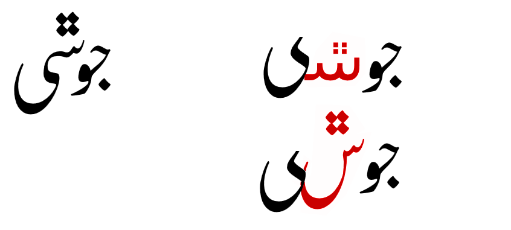Diacritic support
The highly calligraphic and sloping style of Nastaliq makes proper handling of diacritics especially tricky. Some languages require a wider variety and more frequently occurring diacritics than Urdu, so providing support for them has always been a challenge.
Awami Nastaliq includes support for a wide variety of diacritics in combination with all the special characters available in the font. The images below demonstrate how Awami’s special glyph positioning mechanism allows the diacritics to be shifted to avoid collisions that might otherwise occur.
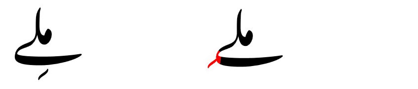
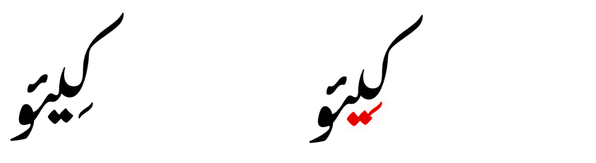

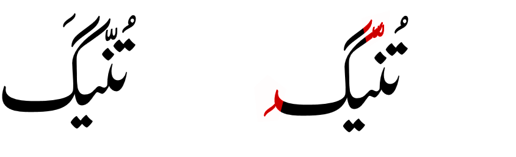
Correct spacing
Graphite’s smart shape-based kerning mechanism is used to both avoid collisions between calligraphic sequences and to provide the correct spacing between words.
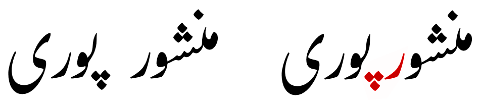
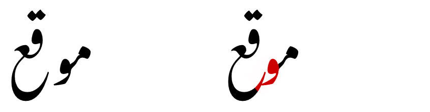
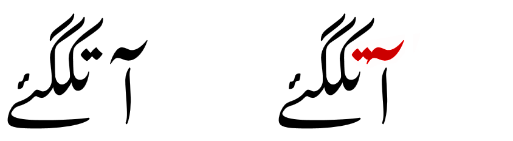
Diagonal cluster fitting
One of the distinctives of the written Nastaliq style is that the left side of diagonally-sloping clusters can be tucked underneath the right side of others in order to give the page a more even texture. This is quite difficult to accomplish with most computer fonts, because the overlap has to be anticipated and the text adjusted ahead of time. The Awami Nastaliq font, however, uses Graphite’s on-the-fly smart positioning to make these adjustments happen without pre-programming.
The images below show some segments and word sequences with the distinctive cluster fitting and compares them with the same sequences without the fitting (in red).
The following examples show cluster fitting within a single word.
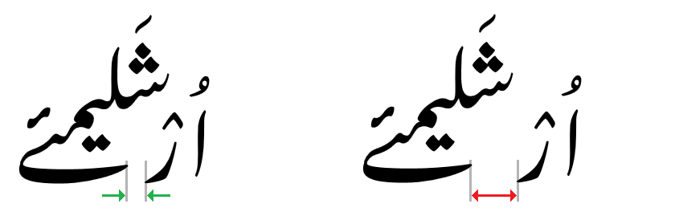
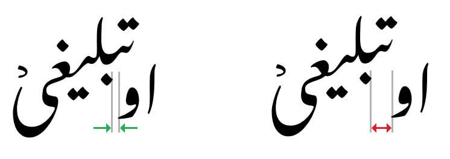
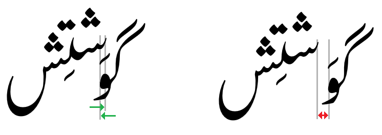
Cluster fitting also occurs between words.
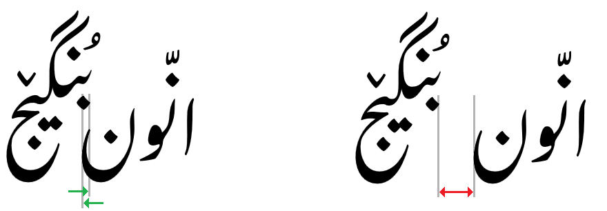
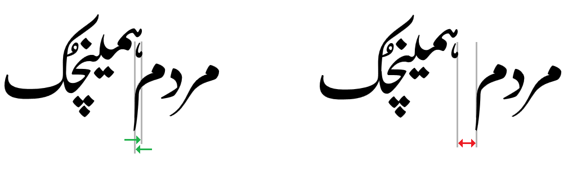
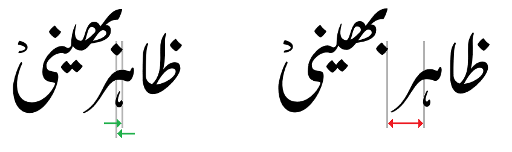
Variable word spacing
Communities that use Nastaliq-style script can have varying preferences about how tight or loose word spacing should be. Highly literate communities often prefer minimal word spacing, but language groups new to literacy find that wider spaces enhance readability for inexperienced readers.
For this reason, Awami Nastaliq allows the user to choose among five levels of word spacing, depending on the needs of the expected readership. The image below demonstrates the five levels of word spacing.
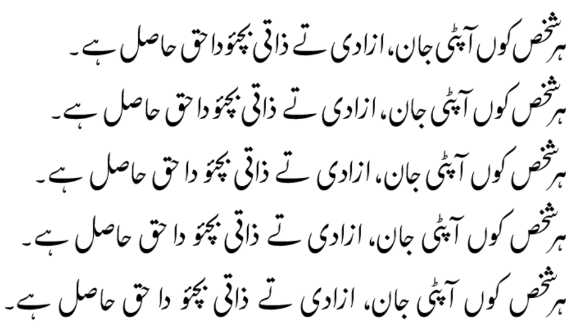
Alternate letter forms
Awami Nastaliq provides alternate forms of the letters shown below. These alternates can be selected within LibreOffice by modifying the font name or in Firefox using CSS - see Features Demo for a description of how to use these features.
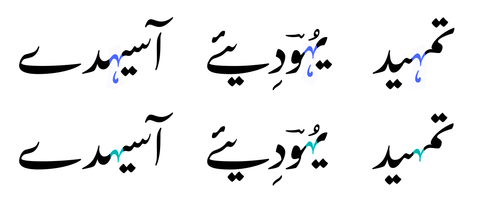Short forms
The diagonal nature of the Nastaliq style causes some of the letter sequences to get quite tall, which can result in collisions with the previous line of text. Awami includes a feature to use shorter forms of some of the letters to help avoid this problem. Letters that can be shortened include kafs and gafs (at or near the beginning of the sequence) and final forms of noon, seen, chotiyeh, lam, meem, and qaf.
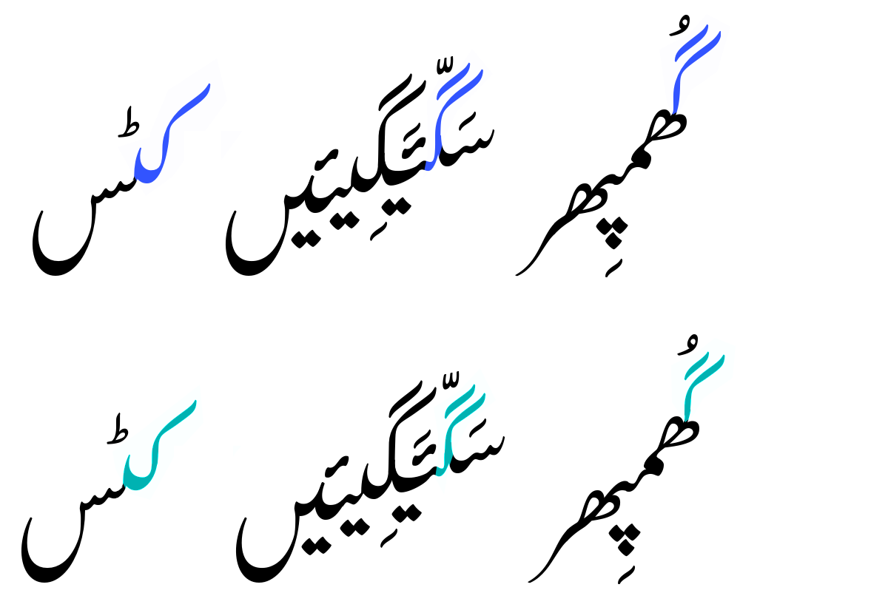